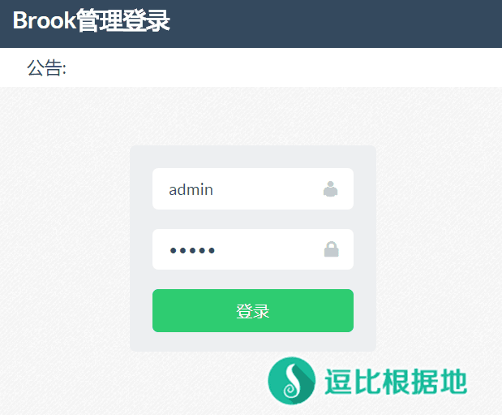
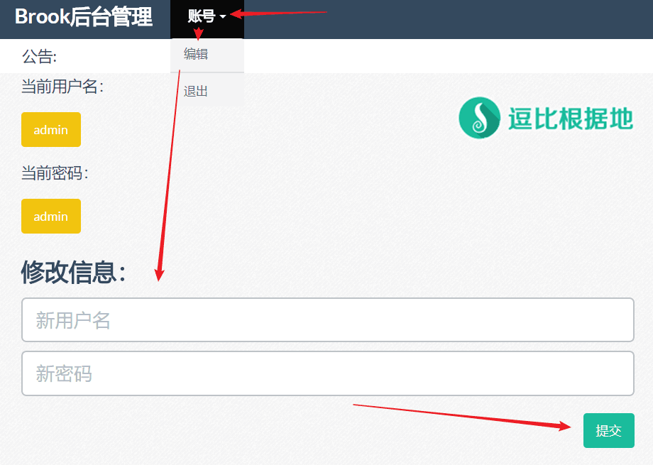
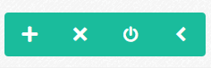
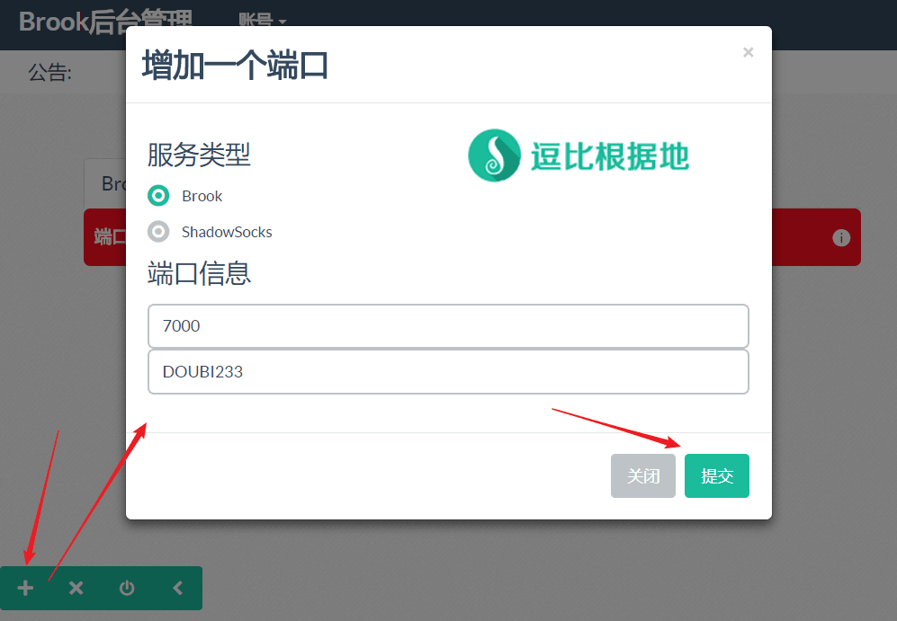
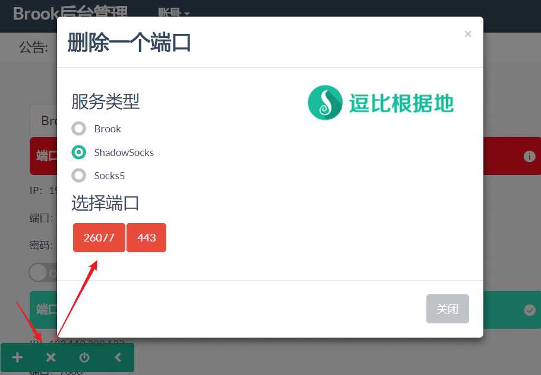
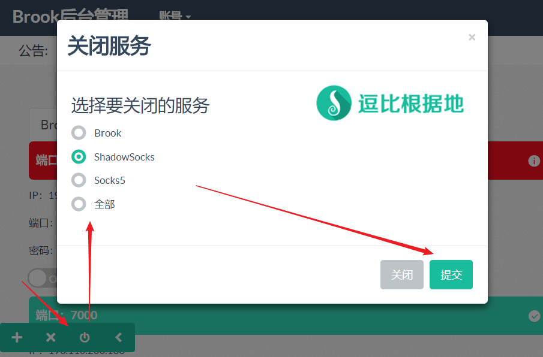
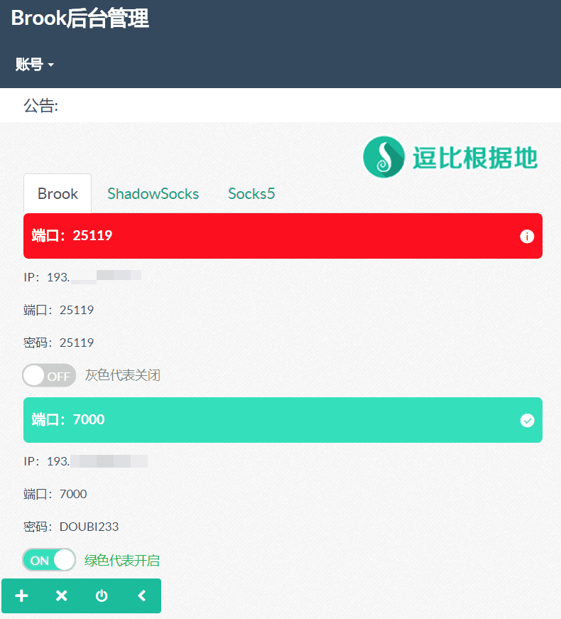

前段时间有个逗比给我推荐了个程序：Brook Web，我看了下也刚刚诞生没几天，虽说功能不够完善，但是看起来还不错，所以就写个教程分享给大家。
其他 Brook 教程请看：https://doub.io/tag/brook/
简单介绍
Brook-Web 依托于 Brook 代理程序，通过 Python 语言实现，可以方便的在网页端管理 Brook、Shadowsocks、Socks5 代理账号。
虽然目前功能不够完善，但是前景还不错，至少对于小白新手来说，更方便了。
Github 项目：https://github.com/Ccapton/brook-web
安装步骤
安装依赖
因为安装和更新 Brook-Web 程序需要用到 git pip curl ，所以需要安装：
# CentOS 系统： yum update yum install git python-pip curl -y # Debian / Ubuntu 系统： apt-get update apt-get install git python-pip curl -y
安装程序
# 下载 Brook-Web 程序至 /usr/local/brook-web 目录下 git clone https://github.com/Ccapton/brook-web.git /usr/local/brook-web # 进入程序目录 cd /usr/local/brook-web # 安装程序所需的 Python 依赖 pip install -r requirements.txt
下载Brook
自动下载(二选一)
python install-brook.py # 如果无法下载，请尝试 python3 install-brook.py
手动下载(二选一)
首先获取 Brook 最新版本号。
new_ver=$(wget --no-check-certificate -qO- https://api.github.com/repos/txthinking/brook/releases | grep -o '"tag_name": ".*"' |head -n 1| sed 's/"//g' | sed 's/tag_name: //g') && echo ${new_ver}
执行完后会输出获取的最新版本号，比如v20180909这样的日期格式，如果返回是空，那么就代表获取失败。
获取失败的情况请去 Github 获取最新的版本号，例如v20180909，然后执行：
# 64位系统使用这个：
wget -N --no-check-certificate "https://github.com/txthinking/brook/releases/download/${brook_ver}/brook"
# 32位系统使用这个：
wget -N --no-check-certificate "https://github.com/txthinking/brook/releases/download/${brook_ver}/brook_linux_386" && mv brook_linux_386 brook
# ARM的需要根据自己的系统构架选择：
# brook_linux_arm、brook_linux_arm5、brook_linux_arm6、brook_linux_arm64、brook_linux_arm7
# 然后赋予执行权限
chmod +x brook
启动
# 无日志 8080端口 启动 nohup python brook-web.py --port=8080 > /dev/null 2>&1 & # 有日志 8080端口 启动 nohup python brook-web.py --port=8080 & # 程序每5分钟清理一次日志文件，所以不用担心爆炸。
启动后，我们就可以访问管理页面了：http://ip:8080/
初始账号：admin
初始密码：admin
停止
kill -9 $(ps -ef|grep "python brook-web.py"|grep -v grep|awk '{print $2}')
查看日志
# 实时查看日志输出内容 tail -f /usr/local/brook-web/nohup.out # 查看完整日志内容 cat /usr/local/brook-web/nohup.out # 程序每5分钟清理一次日志文件，所以不用担心爆炸。
更新程序
# 进入程序目录 cd /usr/local/brook-web # 更新程序 git pull # 检查一下是否有新的依赖要求 pip install -r requirements.txt # 然后你再重启一下 Brook-Web 即可。
卸载程序
# 卸载很简单，直接删除程序目录 rm -rf /usr/local/brook-web
图文介绍
登陆
进入网页后，输入初始默认的账号和密码（admin）点击 登陆 按钮即可。

修改账号密码
然后第一时间去修改初始账号和密码，点击顶部的 账号 - 编辑 ，即可进入修改登陆账号和密码的页面。
输入新的账号和密码后点击 提交 按钮即可。

按钮介绍
从左到右分别对应的是：新增代理账号、删除代理账号、关闭某类型代理账号、隐藏按钮菜单。

新增代理账号
点击第一个加号按钮，然后选择一种代理类型并填写端口和密码，点击 提交 按钮即可。
注意：Socks5代理账号只能有一个端口，所以只能删除旧的，才能添加新的。
注意：因为 Brook 中的 Shadowsocks 只支持 aes-256-cfb 加密方式，所以此处没有选择加密方式的选项。

删除代理账号
点击第二个叉号按钮，然后选择代理类型并点击要删除的端口(每个端口对应一个账号)，会询问你是否要删除，选择 确定 即可。

关闭某类型代理账号
点击第三个电源符号按钮，然后选择要关闭的服务并点击 提交 按钮，关闭后该代理类型账号会全部禁用。

界面介绍
点击端口号即可看到该端口账号的详细信息。
账号信息中的开关对应的是：灰色代表关闭、绿色代表开启。

绑定域名+启用HTTPS
如果你想要使用域名，或者使用HTTPS，那么你只需要这样做：
前提条件
首先你要有个域名，并且将域名解析至当前服务器IP。
例如你的域名为：abc.xxx.com，服务器IP为：1.1.1.1，那么就是：
解析类型：A记录，记录名：abc，解析IP：1.1.1.1
安装Caddy
wget -N --no-check-certificate https://raw.githubusercontent.com/ToyoDAdoubiBackup/doubi/master/caddy_install.sh && chmod +x caddy_install.sh && bash caddy_install.sh install http.filemanager
配置Caddy
申请 SSL证书前，请务必提前解析好域名记录(解析后最好等一会，以全球生效)，否则 Caddy会申请并配置失败！
# 记得将 abc.xxx.com 修改为你的域名。 # 记得将 [email protected] 修改为你的邮箱 # 记得将 http://127.0.0.1:8080 中的 8080 修改为你上面使用的网站端口。 # 注意：该代码是覆盖式写入，如果你已有 Caddy 网站配置，那么请记得将最后一行的 > 改为 >> ，即追加配置。 # 以下全部内容是一个整体，是一个命令，全部复制粘贴到SSH软件中并一起执行！ echo "abc.xxx.com { gzip tls [email protected] proxy / http://127.0.0.1:8080 }" > /usr/local/caddy/Caddyfile
如果一切正常，那么Caddy会自动帮你申请 SSL证书并配置好，而且会定时续约SSL证书 和 http重定向至https ！
Caddy自动申请SSL证书位置：/.caddy/acme/acme-v02.api.letsencrypt.org/sites/xxx.xxx(域名)/
启动Caddy
/etc/init.d/caddy start
启动Caddy后，就可以访问你的域名啦：https://abc.xxx.com
停止Caddy
/etc/init.d/caddy stop
重启Caddy
/etc/init.d/caddy restart
查看Caddy日志
# 实时查看日志输出内容 tail -f /tmp/caddy.log # 查看完整日志内容 cat /tmp/caddy.log
卸载Caddy
wget -N --no-check-certificate https://raw.githubusercontent.com/ToyoDAdoubiBackup/doubi/master/caddy_install.sh && chmod +x caddy_install.sh && bash caddy_install.sh uninstall
其他说明
账号无法使用原因之一
该程序目前并不支持自动开放防火墙端口规则，所以可能是因为防火墙问题导致的，尝试手动开放端口：
iptables -I INPUT -m state --state NEW -m tcp -p tcp --dport 端口 -j ACCEPT iptables -I INPUT -m state --state NEW -m udp -p udp --dport 端口 -j ACCEPT # 删除防火墙规则，内容一样把 -I 换成 -D 就行了： iptables -D INPUT -m state --state NEW -m tcp -p tcp --dport 端口 -j ACCEPT iptables -D INPUT -m state --state NEW -m udp -p udp --dport 端口 -j ACCEPT
转载请超链接注明：逗比根据地 » 网页管理 Brook、SS、Socks5 代理账号 —— Brook-Web 使用教程
责任声明：本站一切资源仅用作交流学习，请勿用作商业或违法行为！如造成任何后果，本站概不负责！

cd 到 brook-web 目录，然后 echo '{"user": {"username": "admin", "password": "admin"}}' > static/json/user.json 重置账号密码为 admin你以后搭建 Brook 就可以在网页上添加账号(端口)、删除账号(端口)了。更适合新手小白使用。
这个程序是用网页可视化的方式来添加、删除端口，适合于不习惯代码操作的新手、小白。
不明白你要表达什么。
这是明智的，否则就是下一个 SS SSR。